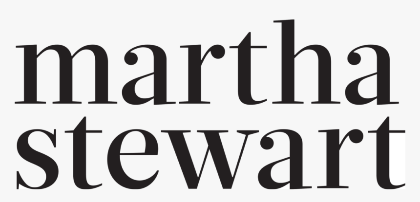

Hi, I'm Sean.
I'm a web designer, developer, and SEO consultant in Norfolk, CT. I've been building websites for over 20 years, and through SKK Studio I work directly with businesses in the Berkshires and nearby.
How I got here
For over 20 years I've worked at GORGES, where I'm Director of Creative & Client Services. I write proposals and contracts, direct UI/UX and graphic design, manage front-end development, and project-manage several of our largest and longest-running client accounts.
That means I'm involved from the first strategy conversation through design, development, and the ongoing work after launch. I also run SEO and Google Ads campaigns for clients in a lot of different industries, and I use AI tools like Claude and Gemini in my design and development work every day.
SKK Studio is where I take on my own clients in Berkshire County, MA, Litchfield County, CT, and Columbia County, NY. You work with me directly on design, development, and SEO, from start to finish.
How I like to work
My favorite projects are the ones that last. I like getting to know a client's business, figuring out what the website needs to do for it, and sticking around to keep improving it.
Most of my work is in WordPress, but I'm comfortable with a wide range of web tools and use whatever fits the project.
Get in TouchMusic
Outside of web work, I'm an audio engineer, producer, and singer-songwriter. I've been performing for over 40 years, on both the East and West Coasts.
A few clients I have worked with
